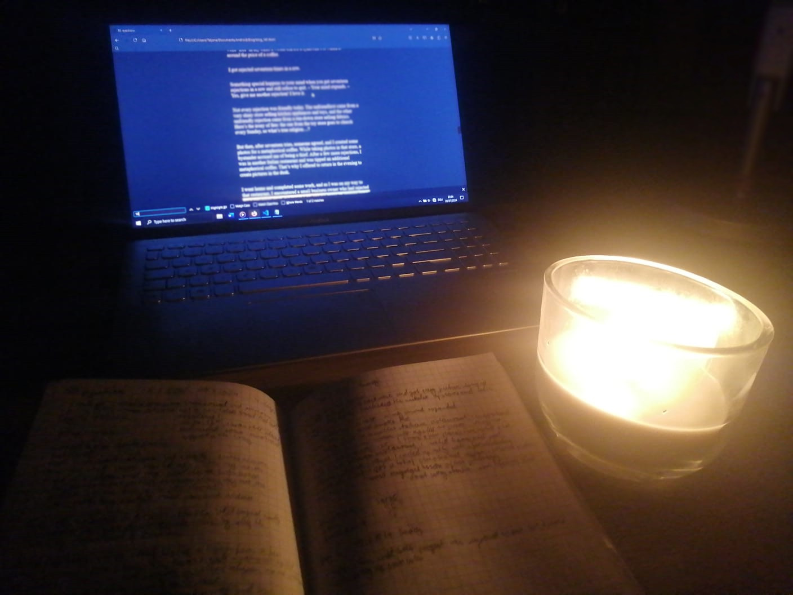

If there was a magic wand to turn a failure into a victory, how often would you use it? This tool also helps to find direction, prevent regret, and stop mistakes from escalating.
Let me reveal this tool. It's called “pause and reflect.”
Of course, nothing is completely free in this world; the price of reflection is your pride. It’s painful to admit one’s ignorance.
I think there’s something romantic about sitting under the light of a candle, taking out a pen and a piece of paper, and writing – all in the hope of sailing to a brighter sky. Sitting down to reflect adds stillness and clarity.

Here are my favorite questions.
Let’s go.
1. What's the biggest thing holding me back?
I started learning Chinese using an app when I was 13, in early 2021. I wanted to avoid regret, and that’s why I started. I progressed well and finished half of the app in a few weeks. But then, I stopped putting in the energy and opened the app daily, only to maintain my streak. After a few hundred days of wasting my time, I started questioning my life. I began to argue with myself. Can I really quit after putting in so much effort? What would my future self do? But then, I made the sacrifice and stopped lying to myself. I saw how my phone enslaved me. After reaching 928 days, I finally decided to quit.
I wanted to write that nothing was holding me back, that I could change today, yet then I remembered what humility was. A lack of healthy calories held me back, so I went to the store and bought as much food as I could carry. I'm held back by staying in bed in the morning and having to walk the dogs in the morning. No matter the level, there’s always something space to improve.
I learned that the biggest improvement often comes from giving up what one doesn’t want to give up. This is the most important question because most people are unwilling to sacrifice anything. Every other question in this meditation is based on ‘What’s the biggest thing holding you back?’ I believe this question is the most romantic one because every time you answer it, you find relief and deeper joy. Every time, you get closer to your true purpose. Every sacrifice brings completion closer.
2. What is my true God?
For a very long time, my life was pretty much dominated by my phone. So, objectively, hedonism was my God. Only after relentless self-improvement was I able to come closer to the true God. I encourage you to ask yourself: What do you truly value, and what do your actions say about what you worship? This isn't just an exercise in self-awareness but a crucial step toward understanding the essence of your existence. To get closer to your true God, align your actions with your deepest values and let your inner desires guide you toward fulfillment.
3. Which conversation am I avoiding?
12th grade ends very early, already in March 2024. University starts in October. Hence, my parents wanted me to apply to internships and programs all summer long. The problem is, I'm not interested in becoming a nerd. So, a few days ago, I sat down with my parents and told them I had one life.
I enjoy difficult conversations because they make me feel very purposeful. They rise above the mundane and beyond the immediate. I know that difficult conversations are the cheat code to progress in life. I don’t mean this as a joke; I genuinely get excited for difficult conversations. Not having these conversations is often the biggest thing holding one back.
To create a cool story for this text, I decided to tell the story of a girl I once crushed over her. Here’s some context. I make it no secret that I desire multiple women at once. I also look everyone in the eyes very deeply to assert my dominance.
I fell in love after sitting opposite her in a free lesson and talking to her. Specifically, I had the impression that she found me attractive. By the way, she is the best friend of the girl I actually wanted.
I hesitated to tell her because I thought she could start thinking she missed her chance. But then, I decided to be a man; she deserved the truth. After taking a deep breath, I noticed that waiting is a fallacy. I would gain respect; being romantic rarely worsens relationships.
I planned to tell her how happy I would be if I saw her on self-improvement, how we would see each other only a few more times and then never again, how …. It was Thursday, and we shared an art class. I wanted to tell her right away but kept getting increasingly nervous. The lesson was over; she was already in the hallway, so I ran to her.
“We only see each other ten times or so for the rest of our lives, and I wanted to tell you that I had a crush on you in 11th grade.”
Her reaction was disappointing because she only commented on how fast time flies by, blushed, and we both walked away. By the way, we will remember this moment for the rest of our lives. I think it’s a cute story.
However, after I went home, I started thinking ill of myself because I wanted to be told much more. Having a crush on someone for a year was worth more than a single sentence. After talking to another friend of hers, I got the reassurance that being real was right and my worries were pointless.
Now I'm at peace.
4. Which belief or label is holding me back?
Most people constantly try to label themselves. Identities are often useful; for example, discipline will come easily if you view yourself as a monk.
Yet, most people use identities to constraint themselves, that means, as excuses. “I’m a morning person.” “I’m a cat person.” “I’m not into sports.” “I’m bad at math.”
The problem is, these excuses aren’t real. If you get up early, you get up early; if you get up late, you get up late. Why should you assign a label to everything instead of living in a flow?
Identities must be positive. For example, “I’m a person who plays hard.” If it’s too hard to execute consistently, label yourself differently: “I’m a person who values trying hard.”
Labels and beliefs are almost identical concepts. The problem with most beliefs taught is that they are false. For example, there’s a belief that you must open up about your traumas to process them. I got rid of my traumas without opening up - because I didn’t believe this nonsense.
For that matter, here’s a belief I know doesn’t serve me. I do not believe in dating because I don’t find myself attractive. There’s no way any high-quality woman will be attracted to me before I'm successful. I see how that’s false, so I'm going to cope with ‘I only know one attractive girl, and she already rejected me.’
5. What do I not want?
Alternative: How can I mess this up?
Because the road to success can seem blurry, examining what will prevent success can be helpful. For example, not having difficult conversations will ensure your failure.
Likewise, I don’t know how to make a relationship last. In fact, I know nothing about relationships. But I know how to make a relationship fail. For example, getting complacent will ruin or make a relationship unbearable.
I don’t know what I want out of life. Maybe it’s a hot blonde or two coupled with monumental success. Yet, what I know for sure is that I don’t want my parents' vision of an ugly girlfriend, a pointless job, and a degree.
“The world is simple, and we insist on making it complicated” - Confucius
6. Where am I wasting time?
A lion chasing mice would starve to death. That’s too much effort for too little output. I encourage you to ask yourself where you are pretending to do something that actually doesn’t change anything. I encourage you to focus on the essentials. Where are you fighting against the current?
7. Where am I waiting for something?
I ask myself these deep questions…
Is this how I want to live?
Am I leaning beyond my true edge?
How can I avoid regret?
What would I do if I wasn’t scared, couldn’t fail, and no one was watching?